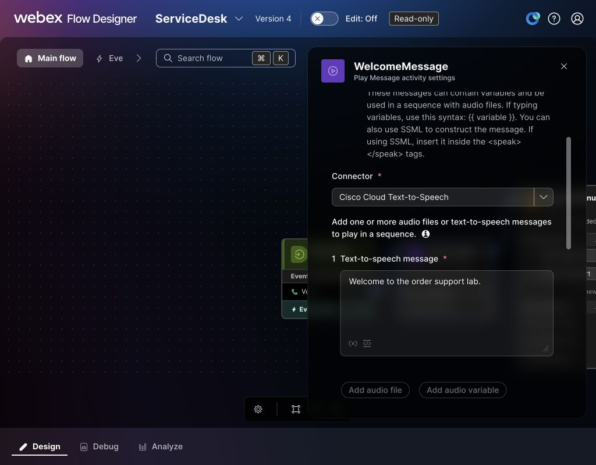
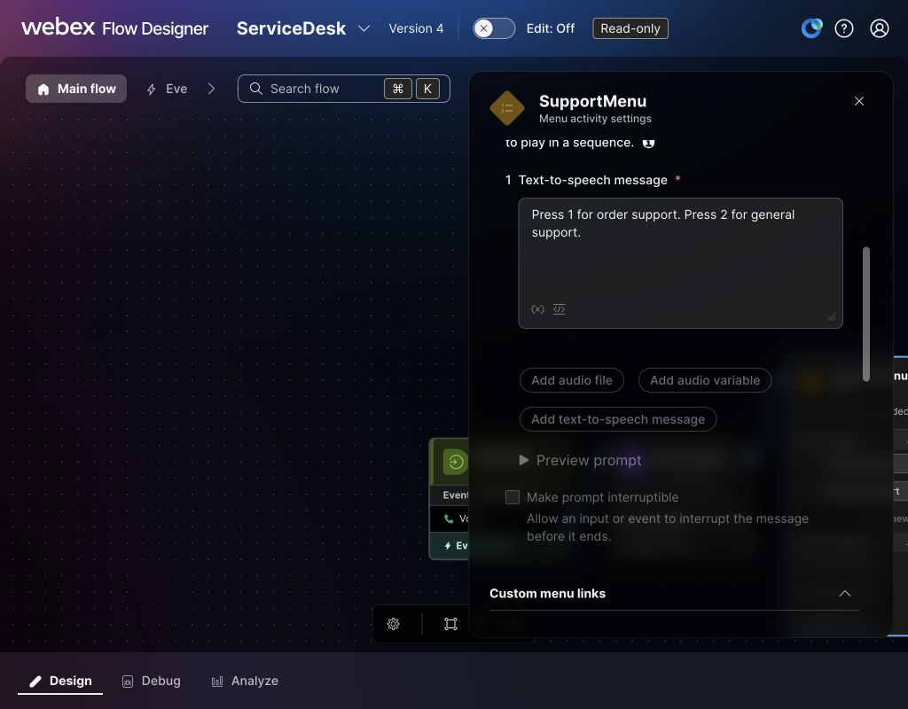
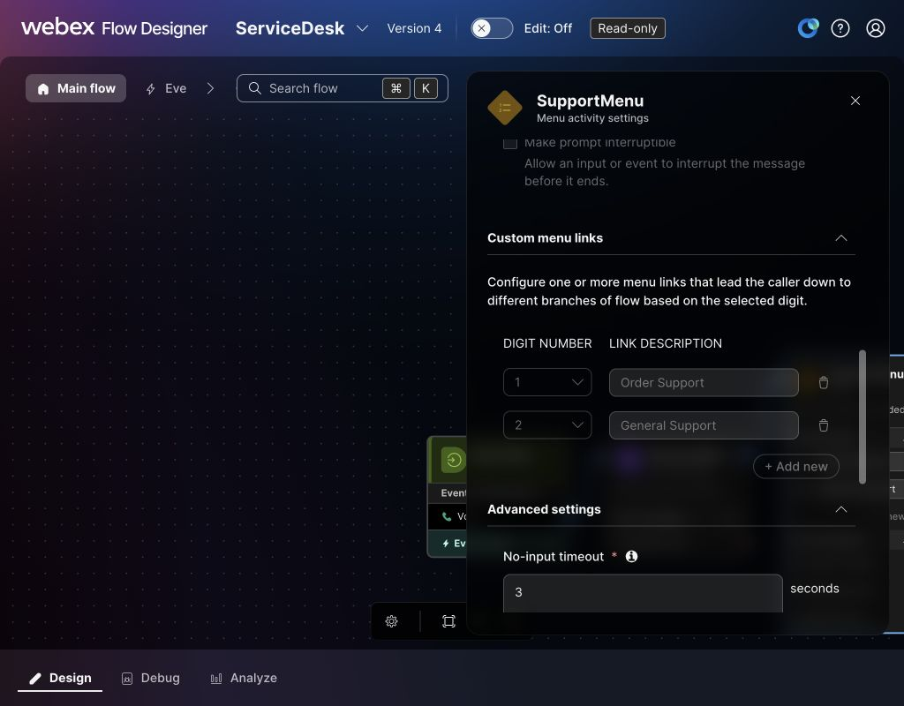
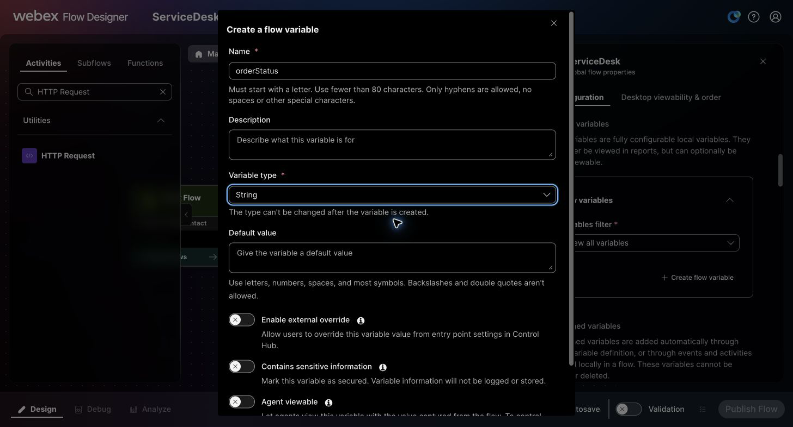
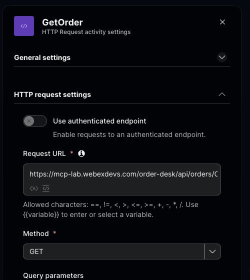
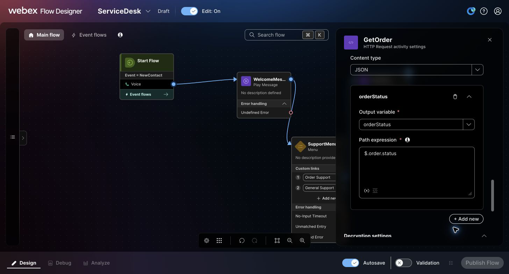
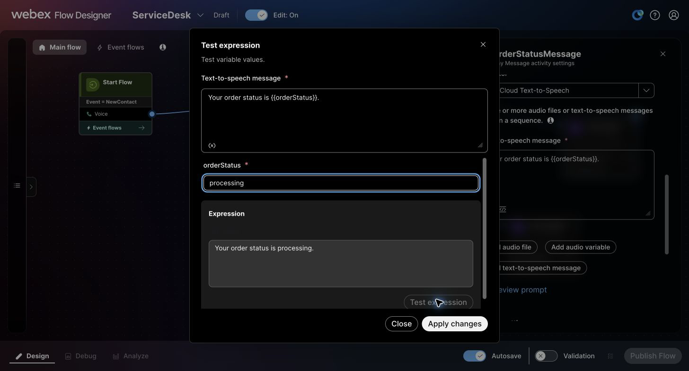
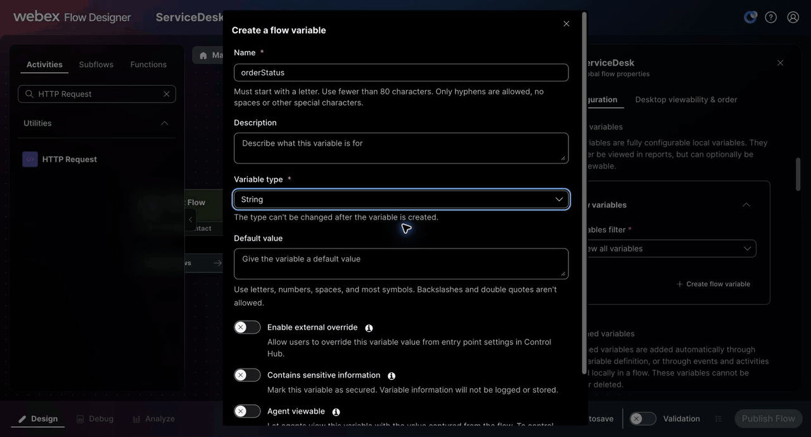
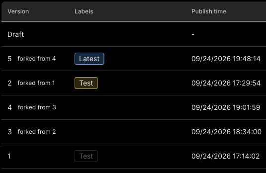

Checkpoints 2-3: Build and call the starter flow
Checkpoint 2: Learn Flow Designer with a queue template, then build ServiceDesk
Part A: Publish your first flow from a template
Start with a small, working voice flow. You will inspect the Flow Designer canvas, replace the template's sample queue with your lab queue, publish the flow, and then use Debug and Analyze to understand what happened on test calls. Keep this practice flow separate from the ServiceDesk flow you will build in Part B.
Open Flow Designer and choose the template
- Sign in to Control Hub with your lab account.
- Open Contact Center → Customer Experience → Flows. Select Manage Flows → Create Flows. Flow Designer opens in a new tab. You can also bookmark the ProdUS1 Flow Designer for this lab tenant.
- Choose Flow, then Use a template. Find Simple Inbound Call to Queue and select it.
- Give the new flow a unique name without spaces, such as
LAB21170_SimpleQueue_<your_initials>, then select Create flow. The screenshots below useLAB21170_SimpleQueue_ARUNas the example name; create your own flow if you are sharing the tenant.
{kind=link}
{kind=link}
Inspect the caller path and configure the queue
- Trace the connected activities on the canvas: WelcomePrompt → Queue Contact → Music → PlayMessage. The queue step places the caller in a human-agent queue; the music and follow-up message are treatment while the caller waits.
- Select WelcomePrompt. In its prompt settings, confirm that text-to-speech is enabled and the connector is Cisco Cloud Text-to-Speech. Play or read the configured greeting so you know what to expect on the call.
- Select Queue Contact. The template's sample queue
Q_arubhattis not the queue for this lab tenant. Replace it with Queue-1. Confirm the selected queue is saved before you publish. - Inspect the Music and PlayMessage activities. Follow the outgoing links so you can see how the waiting treatment repeats or ends. An agent may answer before every waiting activity plays.
{kind=link}
{kind=link}
Validate and publish the practice flow
- Turn on Validation. Resolve any errors shown on the canvas. The example flow shows 0 errors after selecting
Queue-1. - Select Publish. In the publish dialog, Latest is applied automatically. You may also select the offered Test version label and enter a short publish comment. The version label is selected from the dialog; it is not a free-text field.
- Publish and confirm that the flow is Published at version
v1. You can now open Debug and Analyze for this flow.
{kind=link}
{kind=link}
{kind=link}
{kind=link}
Route an entry point to the flow and make test calls
- Return to Control Hub → Contact Center → Customer Experience → Entry Points. Open the inbound voice entry point assigned to your lab sandbox and note its phone number. This area may be called Channels in other versions of Control Hub.
- In that entry point's routing configuration, select your newly published practice flow and the Latest version label, then save. Confirm the entry point now shows the practice flow before dialing. If the assigned entry point already serves another lab participant, use the entry point your facilitator assigned to you.
- Call the entry point's phone number. Listen for the welcome prompt, then confirm that the call reaches
Queue-1. If no agent is available, listen for the queue music and follow-up message. End the call after you have heard enough to identify the path. - Make two or three additional calls. Allow each call to finish so it can appear in Flow Analytics. Try changing how long you remain in queue to see whether the waiting treatment executes.
{kind=link}
{kind=link}
Read a single call in Debug
- Reopen your practice flow and select Debug. Flow Debugging is a postcall view, so look for a completed test interaction.
- Find the call by its time or interaction ID and select it. Follow the highlighted path on the canvas from WelcomePrompt through Queue Contact and any waiting activities that ran.
- Select an activity in the execution list to inspect its outcome, inputs, outputs, and modified variables. Compare two calls that spent different amounts of time in queue. When capturing a screenshot, hide caller numbers and other personal data.
{kind=link}
{kind=link}
{kind=link}
Compare the calls in Analyze
- Select Analyze on the same flow. Choose a time window that includes your completed calls; Last 15 minutes is the default in the current Flow Analytics documentation.
- Compare total flow executions and the counts or percentages on the canvas links. A loop may execute an activity more than once during one call, so an activity count can exceed the number of calls.
- Check whether the welcome, queue, and waiting paths match what you heard and what Debug showed for each individual call. Analytics counts completed calls in the selected period; an active or unfinished call may not appear yet.
{kind=link}
{kind=link}
{kind=link}
Compare your calls with the example trace
In Debug, confirm a completed waiting call passes through the welcome, queue, music, waiting message, and EndFlow. In Analyze, compare executions, activity counts, and node errors with your calls. Counts depend on the selected time window.
The detailed Flow Designer guide explains templates, entry point routing, Debug, and Flow Analytics.
Part B: Build ServiceDesk and add queue treatment
Open the flow workspace
- Sign in to the Webex sandbox listed in Test tenant details.
- In Control Hub, open Contact Center → Customer Experience → Flows.
- Select Manage Flows → Create Flows.
- On the Flow creation screen, select Flow and Start from scratch, then select Next.
{kind=link}
Create the flow
- Name the flow
ServiceDeskand select Create flow. In a shared organization, append your assigned unique lab code, for exampleServiceDesk_G09. Use that flow wherever the guide saysServiceDesk; the screenshots show the unsuffixed example. - Leave the new flow in Draft while you build it.
Confirm the blank canvas
- Confirm that the canvas contains the
NewContactstart event. - Select
NewContactand confirm that its channel type is Voice. - Confirm that Autosave is on. Flow Designer saves draft changes automatically; wait for the saved status before leaving the page.
{kind=link}
Build the starter IVR
Build both menu choices before publishing. Digit 2 must enter Queue-1 directly.
- Turn Edit on.
- Under Voice, drag Play Message onto the canvas. In General settings, set Activity label to
WelcomeMessage. - Connect
NewContacttoWelcomeMessage. -
In the activity's Prompt settings, turn on Enable text-to-speech, set Connector to Cisco Cloud Text-to-Speech, select Add text-to-speech message, and enter:
Welcome to the order support lab.
Check the welcome text and Cisco Cloud Text-to-Speech connector. This read-only capture is from the later menu version. -
Drag Menu onto the canvas. In General settings, set Activity label to
SupportMenu. - Connect
WelcomeMessagetoSupportMenu. - In the Menu's Prompt settings, turn on Enable text-to-speech, select Cisco Cloud Text-to-Speech, add a text-to-speech message, and enter:
Press 1 for order support. Press 2 for general support. -
Under Custom links, add digit
1with the label Order Support and digit2with the label General Support.
Set the spoken Menu prompt for both choices. 
Add the two digit links before connecting their outgoing paths. -
Add Queue Contact, select the assigned
Queue-1queue, and connect the digit2General Support output directly to it. This choice is a request for a human agent; it should not play a placeholder message and disconnect. - After Queue Contact, add Play Music and a Play Message labeled
PleaseWait. Use Cisco Cloud Text-to-Speech for a short prompt such asPlease wait while we connect you.Connect the Queue Contact normal output to Play Music, Play Music toPleaseWait, andPleaseWaitback to Play Music. An agent may answer before every treatment activity runs. - Add another Play Message labeled
QueueErrorMessage. Use Cisco Cloud Text-to-Speech for:I can't connect you to a person right now. Please try again later.Connect Queue Contact Failure and any exposed treatment Undefined Error output toQueueErrorMessage. - Add a temporary Play Message activity named
OrderSupportPending. Use Cisco Cloud Text-to-Speech for:Order support will be added in the next checkpoint.Connect the digit1output fromSupportMenuto this message. You will replace this link with the HTTP Request in Checkpoint 3. - Add a Play Message named
MenuFallbackMessagewith:I did not get a valid choice. Please call again.Connect the Menu's No-Input Timeout, Unmatched Entry, and Undefined Error outputs to this safe fallback. - Add Disconnect Contact named
DisconnectContact. Connect the outputs ofOrderSupportPending,MenuFallbackMessage, andQueueErrorMessageto it. ConnectQueueErrorMessage's Undefined Error output directly toDisconnectContactas well. Keep the digit2normal queue route separate from this disconnect path. - Wait for Autosave, then confirm that both Menu choices and every fallback have a valid destination. Validate before publishing.
{kind=link}
{kind=link}
{kind=link}
Your starter path should now look like this:
- Order support:
NewContact → WelcomeMessage → SupportMenu → 1 → OrderSupportPending → DisconnectContact - General support:
SupportMenu → 2 → Queue Contact (Queue-1) → wait treatmentuntil an agent answers or the call ends - Invalid or missing input:
SupportMenu → MenuFallbackMessage → DisconnectContact
{kind=link}
2 link into Queue Contact and 0 errors. This capture includes later order-lookup nodes; your starter canvas has fewer activities.You will add the final Virtual Agent V2 activity in Checkpoint 9. The published menu-based version remains available in version history as a recovery and learning reference; remove its starter IVR nodes from the final AI draft after reusing the queue treatment, then confirm zero-error Validation before publishing.
Publish the starter IVR
Publish this version so you can hear the flow after the queue-treatment exercise and before adding the API branch.
- Turn on Validation and resolve any errors that prevent publication.
- Select Publish. In the publish dialog, Latest is applied automatically. You can also select the offered Test label and add a comment. There is no free-text version-label field.
- Publish and confirm that
ServiceDeskhas a published version. Do not change the entry-point routing yet; keep it on the practice flow for the queue-treatment exercise below.
Create a reusable queue-treatment subflow
First inspect the Comprehensive Call Flow main-flow template in the gallery. Trace Queue → GetPositioninQueue → SetPIQvalue → AgentBusy → PlayPIQ → CallerMenu. From CallerMenu, digit 1 goes to Callback → Disconnect, digit 2 to a voicemail Blind Transfer, and digit 3 through MusicOnHold → CallLoopCycle for another wait cycle. No input goes to ThankYou → Disconnect; invalid input returns to CallerMenu. The visible FinalMenu has no inbound link in the native draft, so it is outside the running path.
Use this as a design reference. Callback and Blind Transfer are absent from the subflow palette. Build the audible wait with the Queue Treatment Subflow template below. Keep Queue Contact, Callback, and any voicemail transfer in the main flow. Your phone test later in this checkpoint checks the subflow you publish.
{kind=link}
CallerMenu offers callback, voicemail transfer, or another music loop. It is a design reference; the reusable subflow below contains only the supported waiting treatment.The Queue Treatment Subflow template provides an audible wait: music, a text-to-speech message, more music, and a bounded repeat. It does not place the call in a queue. The Queue Contact activity stays in the main flow, before the subflow.
- Return to Control Hub → Contact Center → Customer Experience → Flows → Subflows. Select Manage Subflows → Create Subflow.
- Choose Subflow → Use a template, select Queue Treatment Subflow, and continue. The gallery also offers Collect Callback Info Subflow; this exercise uses a simple callback menu in the main flow instead.
- Enter a unique name without spaces, such as
LAB21170_QueueTreatment_<your_initials>, then select Create subflow.
{kind=link}
{kind=link}
On the subflow canvas:
- Follow the template path from Start Subflow through its Condition, two Play Music activities, Play Message, Set Variable, and End Subflow. The condition and counter bound the internal music/message loop. Keep those links intact.
- In the subflow variable definitions, inspect its four exposed inputs:
queueMessage(String),queueMusic1(String),queueMusic2(String), andmusicDuration(Integer). The live template starts withPlease wait,defaultmusic_on_hold.wavfor both music inputs, and10seconds formusicDuration. OpenmusicDuration, change its Default value to3, and save. This shortens the wait before the callback-or-wait menu to about 15–20 seconds in the tested flow. You may change the waiting message toPlease stay on the line while we connect you.before publishing. Thecountervariable starts at0but is internal to this template, so it is not a main-flow input to map. The template exposes no output variable. - Check that the Play Message activity uses Cisco Cloud Text-to-Speech and reads
queueMessage. Confirm that each Play Music activity uses the intended audio file and duration. - Turn on Validation. Resolve errors, then select Publish Subflow. Confirm the subflow has a published version before you add it to a main flow.
{kind=link}
musicDuration default to 3 seconds before publishing.{kind=link}
{kind=link}
{kind=link}
musicDuration to 3 as shown above before publishing your copy.Publish your configured subflow before selecting it in a main flow. The validation screenshot shows a draft; confirm its call behavior after you connect the published subflow below.
{kind=link}
Offer a callback or another wait cycle in the practice flow
Return to the practice flow from Part A. It already has Queue Contact configured for Queue-1, so you can add treatment without changing ServiceDesk or the Order Desk branch used in Checkpoint 3. Webex places the Courtesy Callback activity in a main flow after Queue Contact; the subflow canvas does not provide that activity. Courtesy Callback requires the queue and enterprise callback feature to be enabled. If your lab queue does not have Callback, build the wait-only path in steps 3–4 and skip steps 5–6. Schedule Callback is a different activity for a chosen future time and needs a callback entry point and scheduling inputs.
- Open the Part A practice flow and turn Edit on. Disconnect Queue Contact from the template's Music activity. Keep the original Music → PlayMessage pair while you wire the replacement, then remove it after the new path validates.
- Open the Subflows tab of the main-flow activity library, add your published queue-treatment subflow, and select its Latest version label. Its four exposed inputs can remain unmapped when you want the published defaults:
musicDuration = 3,queueMessage = Please wait, andqueueMusic1andqueueMusic2both usedefaultmusic_on_hold.wav. If you need different prompts, music, or duration per caller, create matching main-flow variables and map only the inputs you override. The template'scounteris internal; it is not a fifth input. The subflow has no output to map. Connect Queue Contact → Queue Treatment Subflow. - Add a Menu after the subflow and label it
CallbackOrWait. If Callback is enabled for your lab queue, use Cisco Cloud Text-to-Speech for:Press 1 to receive a callback at the number you are calling from. Press 2 to keep waiting.Add custom links for digit1(Callback) and digit2(Keep Waiting). Otherwise, use:Press 2 to keep waiting for an agent.Add only the digit2link; do not offer a callback the queue cannot register. - Connect digit
2, No-Input Timeout, and Unmatched Entry directly back to Queue Treatment Subflow. Do not loop to Queue Contact; the caller is already queued. A caller who stays in queue can be offered to an agent while treatment runs. - If Callback is enabled, add Callback from the main-flow Voice activities and connect digit
1to it. Set Callback dial number toNewPhoneContact.ANIso the return call goes to the caller. Select the lab's approved Static Callback ANI for the outbound return call. If Validation flags Callback, turn on Register callback to different destination? and set Static queue explicitly toQueue-1, even if Queue Contact already uses that queue. Follow your facilitator's queue policy. - If you added Callback, add a short Cisco Cloud Text-to-Speech confirmation Play Message, then Disconnect Contact. Connect Callback → confirmation → Disconnect Contact. The disconnect is required after registering a Courtesy Callback.
- Connect exposed error paths to a safe fallback or an error message followed by Disconnect Contact. If you added Callback, check that its Failure output is connected and that a successful callback does not return to waiting treatment. Flow Designer may show 0 errors even when optional error outputs remain open, so inspect those links yourself.
- Wait for Autosave, turn on Validation, and resolve errors. Publish a new version of the practice flow. The example subflow uses Latest with automatic updates enabled; if you change the subflow later, validate the parent flow again and publish a new parent version before relying on the changed behavior.
The main-flow path is Queue Contact → Queue Treatment Subflow → CallbackOrWait. Digit 2, no input, or an unmatched digit returns to the subflow without queueing the caller again. If enabled, digit 1 goes to Callback → confirmation → Disconnect Contact. This follows the Cisco subflow mapping and Courtesy Callback requirements.
{kind=link}
counter is internal.{kind=link}
NewPhoneContact.ANI supplies the return-call number. In this example, Callback also requires an explicit Queue-1 destination; the outbound Callback ANI is selected separately.{kind=link}
{kind=link}
Show me: wire the parent callback loop
{kind=link}
Follow the published parent flow from Queue Contact into Queue Treatment, inspect its four unmapped inputs, then trace the CallbackOrWait branches. The callback settings shown apply only when Callback is enabled. This sequence shows configuration, not a completed call.
{kind=link}
{kind=link}
Test the queue treatment
- Before a call, connect the Menu Undefined Error output to a short fallback message and a Disconnect Contact. If you added Callback and its confirmation message, connect their Failure and Undefined Error outputs to the same fallback. Connect the fallback message's own error output directly to Disconnect Contact. Validate and publish; the error-fallback screenshot above shows the callback-enabled example.
- Check that your assigned entry point routes to the Part A practice flow on Latest. If it now routes to
ServiceDeskor another participant's flow, coordinate with the facilitator before changing that shared route. Call the practice flow's number. WithmusicDuration = 3, the callback-or-wait menu should begin about 15–20 seconds after queue music starts; call timing can vary. At the menu, press2and confirm that the wait treatment starts again. - On a second call, press
1only if the facilitator has enabled Courtesy Callback for the lab queue. Listen for the confirmation and confirm the original call disconnects. If an agent accepts the queued callback task, confirm that a return call arrives at the caller number. - In Debug, compare the completed main-flow interaction paths. In Analyze, check the subflow invocation and the chosen menu branch. Flow Analytics does not report activities inside a subflow, and it excludes calls registered for callback from its completed-call counts. Your results depend on queue staffing, call duration, and whether callback is enabled.
{kind=link}
2, Debug shows CallbackOrWait → QueueTreatment on the completed practice call.{kind=link}
Route the entry point to ServiceDesk
- Return to Control Hub → Contact Center → Customer Experience → Entry Points. Open the inbound voice entry point assigned to your sandbox. This area may be called Channels in another Control Hub version.
- In its routing configuration, select the published
ServiceDeskflow and the Latest version label, then save. Reassigning a shared entry point changes which flow receives its next call, so coordinate with other lab participants. - Confirm the entry point displays
ServiceDeskas its routing flow and note its assigned phone number. Use that number for the starter IVR test and the Checkpoint 3 API test.
Call the starter IVR
- Call the phone number assigned to your lab entry point.
- Confirm that you hear the welcome message followed by the two menu options.
- Press
2and confirm that the call reachesQueue-1; if no agent answers immediately, listen for music and the waiting message. The menu must not play a general-support placeholder and disconnect. - On a second call, press
1and confirm that the temporaryOrderSupportPendingmessage plays before the call ends. Checkpoint 3 replaces this branch with the Order Desk lookup.
Checkpoint 2 complete when your calls confirm both paths
In the separate practice flow, digit 2 on CallbackOrWait should repeat the waiting treatment; if Courtesy Callback is enabled, digit 1 should register a callback and end the original call. After routing the entry point to ServiceDesk, the front-door menu's digit 1 should reach the temporary order-support message, while digit 2 should enter Queue-1 directly. Check each result in Debug before proceeding.
Checkpoint 3: Call the Order Desk REST API from Flow Designer
Call Order Desk directly from Flow Designer first. In Checkpoints 4–9, you will use the same business data through MCP and an AI agent. This REST path is temporary; publication alone does not prove that the HTTP request ran on a call. If you published the starter IVR in Checkpoint 2, your direct-REST version will have a later number than the version 1 reference screenshot below.
- Return to
ServiceDeskin Flow Designer and turn Edit on. - Open Global Flow Properties from the canvas controls.
- Scroll to Configuration → Custom variables → Flow variables, then select + Create flow variable.
-
Create a variable named
orderStatus, set its type to String, leave its default value blank, and add it to the flow.
Create orderStatusas a String variable. Leave the default value blank so the API response supplies it. -
Wait for Autosave, then close Global Flow Properties.
- Find HTTP Request under Utilities and drag it onto the canvas.
- In General settings, set Activity label to
GetOrder. - Disconnect the digit
1Order Support output fromOrderSupportPendingand connect it toGetOrder. Remove the temporary message and its end link after the replacement path validates. - Open Test tenant details in MCP Lab and find the Order Desk REST API details and temporary bearer token.
- In
GetOrder, turn Use authenticated endpoint off. When it is on, Flow Designer asks for a configured connector and Request path; turning it off reveals the full Request URL field used for this temporary lab endpoint. -
Set Method to
GETand Request URL tohttps://mcp-lab.webexdevs.com/order-desk/api/orders/ORD-10482. Use the assigned URL from Test tenant details if it differs.
The published version 1 activity is named GetOrder. Turning off the authenticated endpoint option exposes the Request URL field. The complete URL is in step 11; keep the Authorization value out of screenshots and GIFs. -
Under HTTP request headers, add Key
Authorizationand ValueBearer <temporary Order Desk token>. Include the wordBearer, one space, and then the token copied from Test tenant details. Keep this temporary value only in the assigned sandbox; never put it in a screenshot, GIF, source file, or notes. - Set the request Content type to Application/JSON.
- Under Parse settings, set Content type to JSON.
-
Under Parse settings, select + Add new. Set Output variable to
orderStatusand Path expression to$.order.status.
Parse the JSON response and map $.order.statusinto the flow's StringorderStatusvariable. -
Add a Play Message activity and set Activity label to
OrderStatusMessage. -
In its Prompt settings, enable text to speech, select Cisco Cloud Text-to-Speech, add a text-to-speech message, and enter:
Your order status is {{orderStatus}}.Open Test expression, enterprocessingas a sampleorderStatus, and confirm the resolved sentence before applying the changes.
The expression preview resolves sample orderStatusto “Your order status is processing.” This checks the prompt expression; the phone call test comes after publication.
Screenshot sequence: create orderStatus, configure the direct GET, map$.order.status, and preview the spoken expression. These setup screens do not show a successful HTTP response. -
Connect the single outgoing
GetOrderport toOrderStatusMessage, then connect the message to the sameQueue Contactused by menu digit2. Confirm it still selectsQueue-1and reaches the Play Music wait treatment. In this tenant, HTTP Request has no separate error port. This direct version tests a known order; the subflow below adds a status guard and anunavailableresult for failures. -
Wait for Autosave, turn on Validation, resolve blocking errors, and select Publish. Latest is applied automatically; add the offered Test label and a comment such as
Order Desk REST lookupif you want to identify this checkpoint. Confirm the entry point still routes toServiceDeskon the intended version.
The direct REST build is retained as published version 1 in this example. The version-history row proves publication; test its caller result separately below.
{kind=link}
{kind=link}
{kind=link}
{kind=link}
{kind=link}
{kind=link}
Before calling, confirm digit 1 connects to GetOrder → OrderStatusMessage → Queue Contact → Play Music, and digit 2 connects directly to Queue Contact → Play Music. The final AI flow removes the menu and direct REST nodes.
Temporary Order Desk credential
Use the manual bearer header only in your assigned sandbox. After the REST exercise, remove the direct HTTP activity or clear its header. At lab cleanup, clear the header in the order-lookup subflow too; an unused published subflow retains its configuration. A production HTTP integration should use a Control Hub custom connector to manage authentication.
Test the API branch by phone
- Call the same inbound phone number from Checkpoint 2 after the new
ServiceDeskversion is published and active at the entry point. - Listen to the welcome message and menu, then press
1. - Confirm that the flow reads the order status returned for
ORD-10482. If it is blank or the request fails, stop the comparison test and inspect the HTTP activity in Debug. Do not present an empty status as a successful lookup; the refactored subflow adds the failure guard. - After checking that your menu's digit
2link goes directly to Queue Contact, press2on a second call. Confirm that general support entersQueue-1without running the order lookup or playing a placeholder message.
If the spoken status is blank
If you hear only “Your order status is,” open that call in Debug. Select GetOrder and check Modified Variables for orderStatus. The activity can show Success even when an expired bearer returns 401 and leaves the variable empty. Copy the current temporary bearer from MCP Lab Test tenant details, replace the Authorization value in GetOrder with Bearer followed by that bearer, then save, validate, publish, and call again. Continue when orderStatus has the returned value and you hear it on the call. If it is still blank, check Parse settings → JSON and the $.order.status mapping. Debug may mask the HTTP response; do not infer HTTP 200 from the activity's Success label.
{kind=link}
1, follow the Debug path from SupportMenu into GetOrder.{kind=link}
GetOrder and check Modified Variables. This completed call set orderStatus to Shipped.{kind=link}
OrderStatusMessage, queue treatment, and music.{kind=link}
{kind=link}
2, confirm Debug reaches QueueContact_4b7 directly after SupportMenu.{kind=link}
GetOrder or GeneralSupportMessage.{kind=link}
Explore Flow Debugging and Flow Analytics
Debugging shows one completed interaction's activity sequence. Analytics aggregates completed calls for a selected flow version and time period.
- Open
ServiceDeskin Flow Designer and select Debug. Find the call that used digit1by its timestamp and published version, then open its Interaction ID. Keep the caller's number out of screenshots. - Follow the highlighted path from
NewContactthroughSupportMenu,GetOrder, andOrderStatusMessage. SelectGetOrderand check Modified Variables fororderStatus. The activity outcome alone does not prove the HTTP request returned a usable order. Leave decryption off when capturing guide media so the authorization header and response remain masked. - Open the digit
2call and compare its path. It should reach Queue Contact and wait treatment without invokingGetOrder. - Make two or three more short test calls, ending each call cleanly. Select Analytics, choose a time range covering those calls, and compare the Menu's digit
1and digit2execution counts. If the totals have not appeared yet, wait for completed-call data to arrive and check the selected flow version and time range.
Read the right evidence
Debugging follows one Interaction ID. Analytics counts completed flow executions and activity ports; ongoing calls and callback calls may be excluded. After you move the lookup into a subflow, Analytics shows the subflow activity in the main flow but not the subflow's internal nodes.
Create a Function to read the Order Desk response
The direct HTTP activity uses JSONPath to select one field. Next, move that lookup into a subflow and use a Function there to read the parsed response, check whether it contains a usable status, and return a small result contract. Publish the direct-HTTP flow version first so you can compare both designs.
- In Control Hub, open Contact Center → Customer Experience → Functions and select Create a function. Choose Start Fresh, name it
LAB21170_ParseOrderStatus_<your_initials>, and choose Python with the runtime offered by your sandbox. - Add an input variable named
order_datawith type JSON. In Output variable definition, enter the sample JSON{"status":"processing","lookupSucceeded":true}. This area is a JSON example, not two separate typed-variable forms; its keys and value types must match the code and output mappings below. -
Replace the starter code with this parser. It extracts
order.statusfrom the parsed JSON, returnsunavailablewhen the field is missing, and does not make a network call or use a credential:from models import Request, Response def handle(request: Request, response: Response): payload = request.data['inputs'].get('order_data') or {} order = payload.get('order', {}) if isinstance(payload, dict) else {} status = order.get('status', '') if isinstance(order, dict) else '' status = status.strip() if isinstance(status, str) else '' response.data = { 'status': status or 'unavailable', 'lookupSucceeded': bool(status), } return response -
In the Function test panel, use
{"order":{"status":"processing"}}fororder_dataand select Test. Confirm that the result hasstatusCode: 200,data.status: processing, anddata.lookupSucceeded: true. Test{}as well;data.statusshould beunavailableanddata.lookupSucceededshould befalse. Then test the valid JSON object{"order":{"status":42}}: a non-string status must also returnunavailableandfalse. If you type malformed JSON syntax such as{bad, the JSON input rejects it and disables Test; correct the input before testing the Function. Fix code or output definitions before publishing.The dedicated Function's live test returns a typed status and lookup flag from the sample order JSON. Repeat with {}to verify the missing-field fallback.Screenshot sequence: local Function tests return processingfor sample order JSON andunavailablefor{}, then the Function publish dialog opens. This is not a caller test.Malformed-shape input: valid JSON with a numeric statusfield.The same live test returns unavailableandlookupSucceeded: falsewithout a runtime error. Syntactically invalid JSON is stopped by the test form before the Function runs. -
Select Publish Function and note the published version label. A draft Function is not available for use by the subflow.
{kind=link}
{kind=link}
{kind=link}
{kind=link}
Refactor GetOrder into a subflow
- In Control Hub → Contact Center → Customer Experience → Flows → Subflows, select Manage Subflows → Create Subflow. Start from a blank subflow and name it
LAB21170_OrderLookup_<your_initials>; subflow names cannot contain spaces. - In the subflow's variable definitions, create
orderNumberas a String input with sample valueORD-10482,orderStatusas a String output,lookupSucceededas a Boolean output, andorderResponseJsonas a local JSON variable. The StringorderStatusoutput is the required contract withServiceDesk; the Boolean output can be used where a tenant offers it in the parent-flow mapping selector. - Add an HTTP Request activity, label it
FetchOrderRecord, and connect it from Start Subflow. Turn Use authenticated endpoint off, set Method toGET, and set Request URL tohttps://mcp-lab.webexdevs.com/order-desk/api/orders/{{orderNumber}}. Flow Designer's URL field accepts{{variable}}; its expression preview should resolve the sample order number to/ORD-10482. -
Add the same temporary Order Desk Authorization header from Test tenant details, set request content type to Application/JSON, then set Parse settings → Content type to JSON. Select + Add new, choose local Output variable
orderResponseJson, and enter$as the Path expression. This makes the whole response object available to the Function without mixing up the HTTP String body and a JSON input.During draft assembly, $maps the whole response into local JSONorderResponseJson. Complete the links and status guard before publishing. -
Add a Condition activity labeled
HttpStatusIs200betweenFetchOrderRecordand the parser Function. Enter{{FetchOrderRecord.httpStatusCode == 200}}as the Condition expression. In Test expression, sample200must resolve totrueand404tofalse. HTTP Request exposes one outgoing canvas port in this tenant, so this Condition prevents a non-200 response from reaching the parser.The expression preview checks the guard with sample status 404. It is a local expression test, not an Order Desk HTTP result. -
Open the subflow's Functions tab, drag your published
LAB21170_ParseOrderStatus_<your_initials>Function onto the canvas, and choose its published version. Connect theHttpStatusIs200True output to the Function. Map its JSON inputorder_datatoorderResponseJson. - Map Function output
$.statusto subflow outputorderStatusand$.lookupSucceededto subflow outputlookupSucceeded. Connect the Function's successful output to End Subflow. Add a Set Variable activity labeledSetLookupUnavailablethat setsorderStatustounavailableandlookupSucceededto Booleanfalse; connect the Condition's False and Undefined Errors outputs and the Function's Undefined Errors output to it, then connect it to a second End Subflow. A non-200 status or parser failure follows this fallback. Check timeout and network-error behavior with Debug rather than assuming those failures use the same port. -
Turn on Validation, resolve blocking errors, and Publish Subflow. Keep the earlier direct-HTTP main-flow version as a recovery point.
The complete draft routes status 200through the parser and other status codes throughSetLookupUnavailable. Flow Designer reports zero structural errors and “Ready to publish”; the phone test still verifies runtime behavior.The validated OrderLookup subflow was published as version 1 with Testand automaticLatestlabels. The parentServiceDeskflow must still be republished after it invokes this subflow.Screenshot sequence: map the whole response, test the HTTP status guard, map the Function result, validate, and publish OrderLookup. The validation and version screens prove structure and publication; a phone call still has to verify the runtime lookup.
{kind=link}
{kind=link}
{kind=link}
{kind=link}
{kind=link}
Use the subflow from ServiceDesk
- In
ServiceDesk, add a String flow variableorderNumberwith defaultORD-10482. Keep the existing StringorderStatusvariable and set its default tounavailablefor this refactored version so an unset result cannot be spoken as a successful status. A BooleanlookupSucceededvariable may appear in Global Flow Properties, but this tenant did not offer the subflow's Boolean output in the parent mapping selector; do not depend on it. - Open the Subflows tab, drag the published order-lookup subflow onto the canvas, and choose its published version. Map main-flow
orderNumberto the subflow input and map the subflow's StringorderStatusoutput to the parent StringorderStatusvariable. If your tenant also offerslookupSucceededas a matching Boolean output mapping, you may map it to a parent Boolean variable, but the path below usesorderStatus. -
Move the digit
1link from the directGetOrderactivity to the new subflow. After it returns, add a Condition on{{orderStatus != "unavailable"}}: True reachesOrderStatusMessage; False plays a short message such asOrder information is temporarily unavailable.Both paths can then reach the assigned human queue and its wait treatment. Remove the now-disconnected directGetOrderactivity if validation requires it; the earlier published version still preserves the comparison exercise.The parent Condition's expression preview rejects sample unavailable; it is a local expression check, not a phone result. -
Validate and publish
ServiceDeskagain. Publishing only the subflow does not update the routed main flow. Check that the entry point uses the intendedServiceDeskversion before calling.The refactored parent draft passed structural validation with zero errors before publication. This does not show a completed call. Entry Point-1 is routed to the published ServiceDeskLatest version. Routing configuration alone does not verify the order response on a call. -
Call the assigned number, press
1, and compare the spoken status with the earlier direct-HTTP design. In Debug, confirm the path enters the order-lookup subflow and returns a non-unavailableorderStatus, or plays the temporary-unavailability message. Before a second call, confirm digit2links directly to Queue Contact. Press2and confirm that it enters the human queue without running OrderLookup. Use Analytics to compare the main-flow branch counts after both completed calls; it does not display the subflow's internal activity counts.
{kind=link}
{kind=link}
{kind=link}
Check the menu before calling
Connect No-Input Timeout, Unmatched Entry, and Undefined Error from SupportMenu to MenuFallbackMessage → Disconnect Contact. Confirm digit 2 connects directly to Queue Contact, then validate and publish. If Debug stops at SupportMenu with Error, inspect the prompt and links before calling again.
{kind=link}
SupportMenu with Error. Debug did not identify the cause or a selected digit.{kind=link}
1 call.{kind=link}
{kind=link}
Shipped for ORD-10482; the same call later reached the status message and queue treatment.{kind=link}
Show me: correct the general-support route
{kind=link}
Digit 2 joins the same queue activity as the order path. The first frame shows 0 errors; the second shows the corrected queue and wait-treatment links. Checkpoint 9's version history shows this menu version was published.
Publish your corrected menu version, then call again and confirm in Debug that digit 2 enters Queue-1. Zero-error Validation alone does not confirm what a caller hears.
If the API branch fails
For the first version, check the full request URL, the temporary Authorization header, and the $.order.status JSON path. For the refactored version, also check the subflow input/output mappings, the $ JSON mapping, HttpStatusIs200, and Function result paths. Keep the starter IVR connected until Checkpoint 9; the earlier published version preserves the direct-HTTP comparison.
Finish Checkpoint 3 after your calls prove the paths
Call the direct REST version and confirm in Debug that digit 1 reaches GetOrder and reads the status for ORD-10482. Call the refactored version and confirm that digit 1 runs the HTTP subflow and Function, then reads the status or the temporary-unavailability message. Confirm that digit 2 enters Queue-1 without the lookup or placeholder. Compare the completed paths in Debug and Analytics before marking the checkpoint complete.